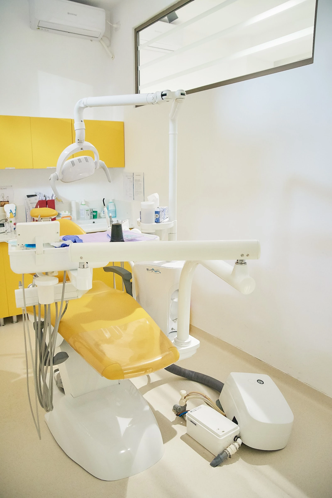
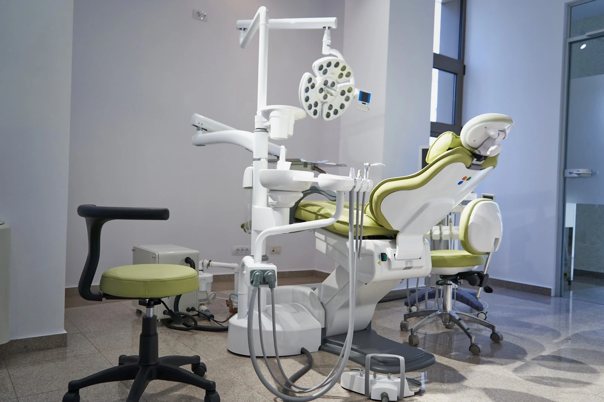
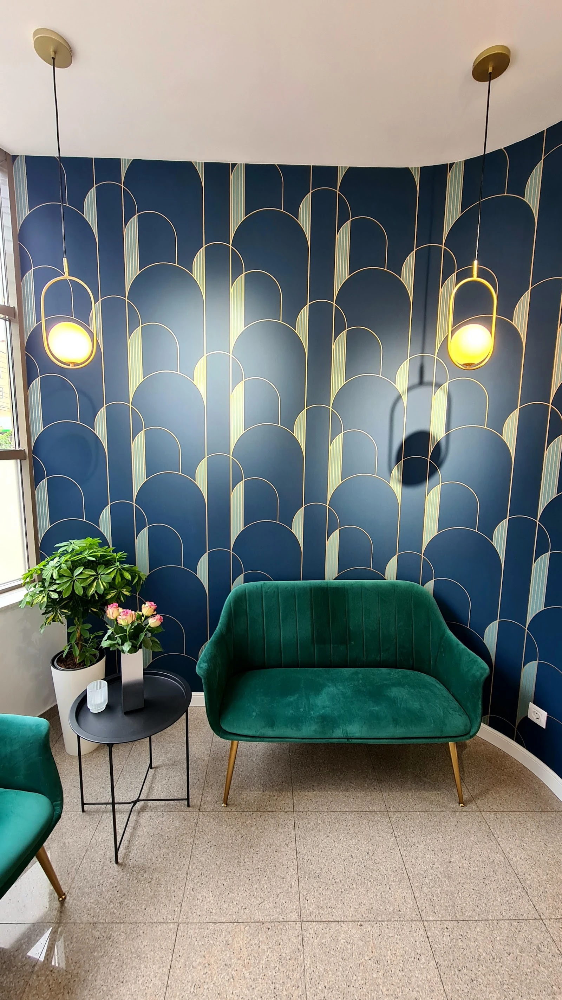
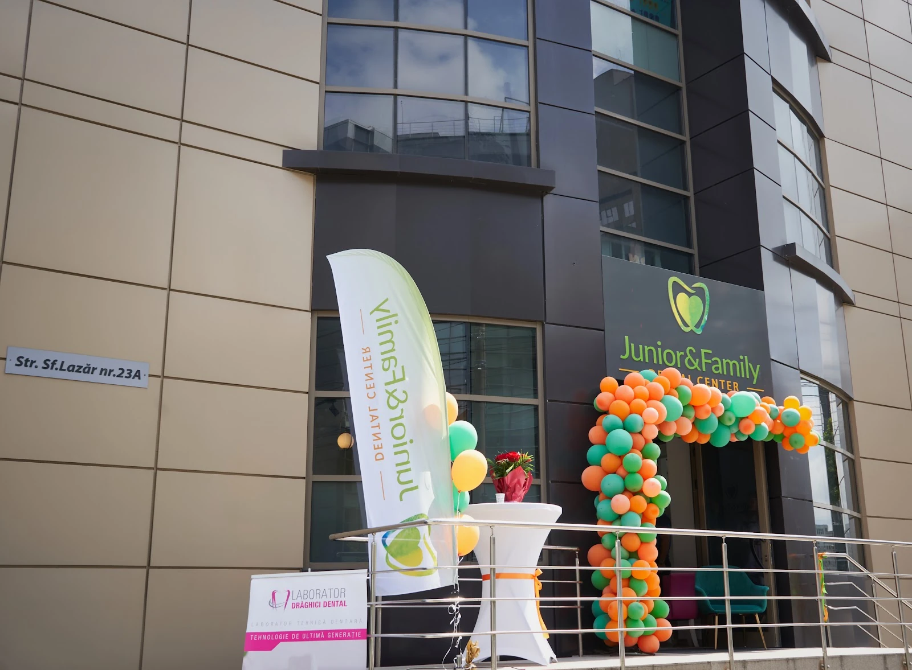
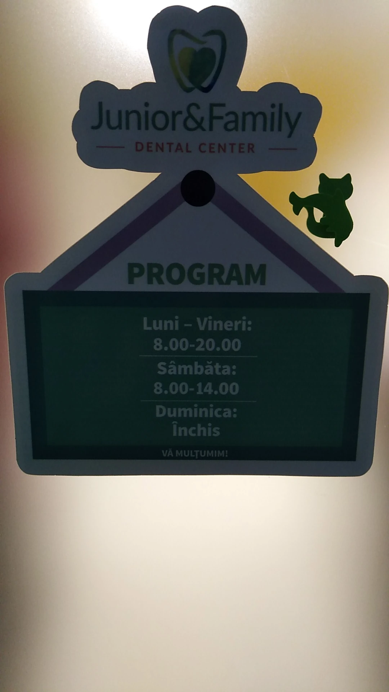
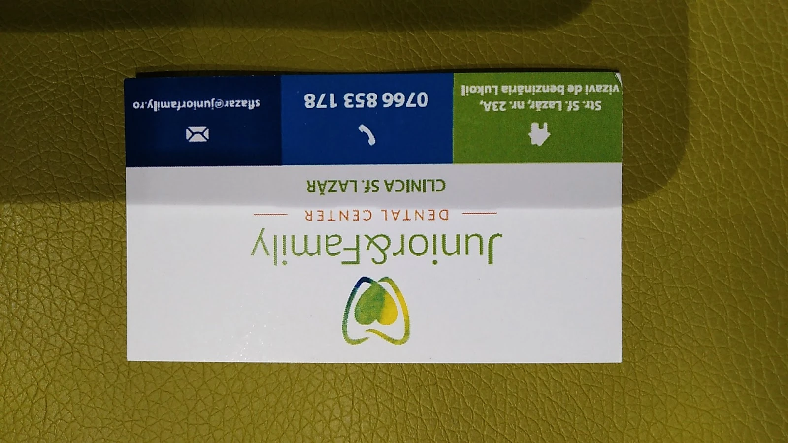

{{Clinică de stomatologie · Strada Sfântul Lazăr, Iași|Dental clinic · Strada Sfântul Lazăr, Iași|Clínica dentária · Strada Sfântul Lazăr, Iași}}
{{Zâmbete mici,|Little smiles,|Sorrisos pequenos,}}{{zâmbete mari.|big smiles.|sorrisos grandes.}}
{{Stomatologie pentru toată familia. Pacienții spun același lucru despre noi: blândețe, răbdare și explicații la fiecare pas.|Dentistry for the whole family. Patients say the same about us: gentleness, patience and an explanation at every step.|Medicina dentária para toda a família. Os pacientes dizem o mesmo: delicadeza, paciência e uma explicação a cada passo.}}

{{Un scaun mic, unul mare|A small chair, a big one|Uma cadeira pequena, outra grande}}
{{Mic sau mare, e loc pentru fiecare|Small or big, there is room for everyone|Pequeno ou grande, há lugar para todos}}
{{Aici începe programarea: spui dacă vine un copil sau un adult, apoi motivul și ziua.|This is where booking starts: you say whether a child or an adult is coming, then the reason and the day.|É aqui que começa a marcação: diz se vem uma criança ou um adulto, depois o motivo e o dia.}}
{{Junior & Family|Junior & Family|Junior & Family}}
{{Toată familia, într-un singur rând|The whole family, in one row|A família toda, numa só fila}}
{{„Fetița se comportă ca și cum nu am fi fost la clinică”, scrie o mamă. Iar un alt pacient: „doamna doctor explică fiecare etapă”.|“She behaves as if we hadn’t been to the clinic,” writes one mother. And another patient: “the doctor explains every stage”.|«A menina comporta-se como se não tivéssemos ido à clínica», escreve uma mãe. E outro paciente: «a doutora explica cada etapa».}}
{{Cabinetul|The clinic|O consultório}}
{{Lumină, culoare și un colț cu canapea verde|Light, colour and a corner with a green sofa|Luz, cor e um canto com sofá verde}}


{{Programare|Booking|Marcação}}
{{Cine vine pe scaun?|Who is sitting in the chair?|Quem vem para a cadeira?}}
{{Alege copil sau adult, motivul și ziua. Mesajul se scrie singur și pleacă pe WhatsApp sau SMS; clinica îți confirmă ora.|Choose child or adult, the reason and the day. The message writes itself and goes out on WhatsApp or SMS; the clinic confirms the time.|Escolha criança ou adulto, o motivo e o dia. A mensagem escreve-se sozinha e sai por WhatsApp ou SMS; a clínica confirma a hora.}}
{{Recenzii Google|Google reviews|Opiniões no Google}}
{{Ce scriu pacienții|What patients write|O que escrevem os pacientes}}
{{„Îmbină profesionalismul cu empatia, răbdarea și atenția la fiecare pacient.”|“She combines professionalism with empathy, patience and attention to every patient.”|«Alia o profissionalismo à empatia, à paciência e à atenção a cada paciente.»}}
Alexandra A. · {{despre Dr. Paula Martiniuc|about Dr. Paula Martiniuc|sobre a Dra. Paula Martiniuc}}
{{„Doamna dr Martiniuc Paula și doamnele asistente sunt minunate.”|“Dr. Martiniuc Paula and the nurses are wonderful.”|«A Dra. Martiniuc Paula e as enfermeiras são maravilhosas.»}}
maren and · {{Local Guide|Local Guide|Local Guide}}
{{„Recomand cu mare drag Clinica Junior&Family!”|“I wholeheartedly recommend Junior&Family Clinic!”|«Recomendo de coração a Clínica Junior&Family!»}}
Alina D. · {{mamă a unei fetițe|mother of a little girl|mãe de uma menina}}



{{Cum ne găsești|How to find us|Como nos encontrar}}
{{Strada Sfântul Lazăr, Iași|Strada Sfântul Lazăr, Iași|Strada Sfântul Lazăr, Iași}}
- Strada Sfântul Lazăr nr. 23A700045 Iași, România
- {{Luni–Vineri|Mon–Fri|Seg–Sex}}
- 08:00–20:00
- {{Sâmbătă|Saturday|Sábado}}
- 08:00–14:00
- {{Duminică|Sunday|Domingo}}
- {{închis|closed|fechado}}
- 0766 853 178{{telefon, WhatsApp sau SMS|phone, WhatsApp or SMS|telefone, WhatsApp ou SMS}}
- juniorfamily.ro